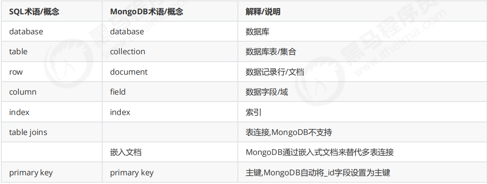
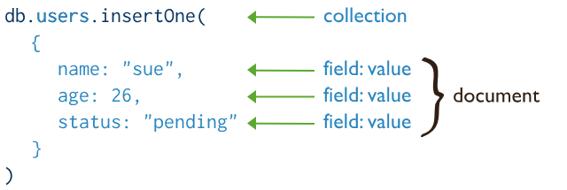
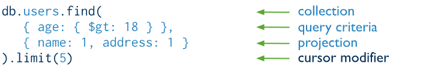
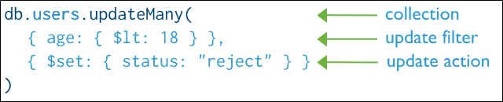

2025-06-27
MongoDB learning
\n
MongoDB是一个基于“分布式文件存储”的数据库，是典型的NoSQL。使用cpp编写，是一种高性能可扩展的数据存储解决方案，支持松散的数据结构（类似于json的一种bson格式）
\n\n\n\n
具体应用场景 ：
\n\n\n\n
\n
- 社交场景，使用 MongoDB存储存储用户信息，以及用户发表的朋友圈信息，通过地理位置索引实现附近的人、地点等功能。 \n\n\n\n
- 游戏场景，使用 MongoDB存储游戏用户信息，用户的装备、积分等直接以内嵌文档的形式存储，方便查询、高效率存储和访问。 \n\n\n\n
- 物流场景，使用 MongoDB存储订单信息，订单状态在运送过程中会不断更新，以 MongoDB内嵌数组的形式来存储，一次查询就能将订单所有的变更读取出来 \n\n\n\n
- 物联网场景，使用 MongoDB存储所有接入的智能设备信息，以及设备汇报的日志信息，并对这些信息进行多维度的分析。 \n\n\n\n
- 视频直播，使用 MongoDB存储用户信息、点赞互动信息等。
\n
\n\n\n\n

\n\n\n\n
Mongo最大的特点是它支持的查询语言非常强大，其语法有点类似于面向对象的查询语言，几乎可以实现类似关系数据库单表查询的绝大部分功能，而且还支持对数据建立索引。首先我们从增删改查、索引、aggregate聚合三大方面来了解MongoDB的基础操作
\n\n\n\n
CRUD（增删改查）
\n\n\n\n
创建操作
\n\n\n\n
创建或插入操作用于将新文档添加到集合中。如果集合当前不存在，插入操作会创建集合。
\n\n\n\n
MongoDB 提供以下方法将文档插入到集合中：
\n\n\n\n
\n
db.collection.insertOne()\n\n\n\ndb.collection.insertMany()\n \n\n\n\n
MongoDB 中的所有写入操作在单个文档级别都具有原子性。
\n\n\n\n

\n\n\n\n读取操作
\n\n\n\n
读取操作用于从集合中检索文档，即查询集合中的文档。MongoDB 提供以下方法来从集合中读取文档：
\n\n\n\n

\n\n\n\n插入行为
\n\n\n\n
如果该集合当前不存在，则插入操作将创建该集合。
\n\n\n\n
在MongoDB中，存储在标准集合中的每个文档都需要一个唯一的_id字段作为主键。如果插入的文档省略了_id 字段，则MongoDB驾驶员会自动为 _id字段生成 ObjectId。
\n\n\n\n
这也适用于通过执行 upsert: true 的更新操作插入的文档。
\n\n\n\n
更新操作
\n\n\n\n
更新操作用于修改集合中的现有文档 。MongoDB 提供以下方法来更新集合中的文档：
\n\n\n\n
\n
db.collection.updateOne()\n\n\n\ndb.collection.updateMany()\n\n\n\ndb.collection.replaceOne()\n \n\n\n\n
update支持partial的更新，而replace是直接替换
\n\n\n\n
批量更新可以指定条件or过滤器
\n\n\n\n

\n\n\n\n删除操作
\n\n\n\n
删除操作用于从集合中删除文档。MongoDB 提供以下方法来删除集合中的文档：
\n\n\n\n
\n
db.collection.deleteOne()\n\n\n\ndb.collection.deleteMany()\n \n\n\n\n
在 MongoDB 中，删除操作针对的是单个集合。MongoDB 中的所有写入操作在单个文档级别都具有原子性。
\n\n\n\n
您可以指定条件或过滤器来识别要删除的文档。这些过滤器使用与读取操作相同的语法。
\n\n\n\n \n\n\n\n
\n\n\n\n
增删改查中的重要条件表述
\n\n\n\n
在更新时，会涉及到以下三个问题：
\n\n\n\n
\n
- 新数据 \n\n * 默认是对原数据进行替换 \n\n\n\n * 若要进行修改,格式为 {修改器:{key:value}} \n\n \n\n\n\n
- 是否新增 \n\n
- 条件匹配不到数据时是否插入: true插入,false不插入(默认) \n\n \n\n\n\n
- 是否修改多条 - \n\n
* 条件匹配成功的数据是否都修改: true都修改,false只修改一条(默认)
\n\n
\n
\n\n\n\n修改器 作用 $inc 递增 $rename 重命名列 $set 修改列值 $unset 删除列 \n\n\n\n
db.集合名.update(条件, 新数据 [,是否新增, 是否修改多条])
\n\n\n\n
任务：修改gcc的username为bareth，age+11，sex字段重命名为sexuality，删除address字段
\n\n\n\n
db.people.update({username:"gcc"},{\n\t$set:{username:"bareth"},\n\t$inc:{age:11},\n\t$rename:{sex:"sexuality"},\n\t$unset:{address:true}\n})
\n\n\n\n
对于查询而言，可以采取如下两种语法进行
\n\n\n\n
db.集合名.find(条件 [,查询的列])
db.集合名.find(条件 [,查询的列]).pretty() #格式化查看
\n\n\n\n
查询的列是通过0,1分别指定的。
\n\n\n\n
# 查询的列(可选参数)\n- 不写则查询全部列\n- {key:1}\t只显示key列\n- {key:0}\t除了key列都显示\n- 注意:_id列都会存在
| \n\n\n\n运算符 | 作用 |
|---|---|
| $gt | 大于 |
| $gte | 大于等于 |
| $lt | 小于 |
| $lte | 小于等于 |
| $ne | 不等于 |
| $in | in |
| $nin | not in |
| \n\n\n\n |
分页查询也是内置的一种方法（可通过find,sort,skip和limit来实现）
\n\n\n\n
db.集合名.find().sort().skip(数字).limit(数字)[.count()]\n\n# skip(数字)\n- 指定跳过的数量(可选)\n\n# limit(数字)\n- 限制查询的数量\n\n# count()\n- 统计数量
\n\n\n\n
实战 ：数据库有1~10条数据，每页显示2条，一共5页
\n\n\n\n
# 数据准备\nfor(var i=1;i<11;i++){\n\tdb.page.insert({_id:i,name:"p"+i})\n}\n\n# 分5页,每页2条显示\nfor(var i=0;i<10;i=i+2){\n\tdb.page.find().skip(i).limit(2)\n}
\n\n\n\n
聚合查询
\n\n\n\n
由于聚合功能是mongoDB特色的、强悍的一项查询+处理指令，因此单独区分开来讲解，具体的操作与实现逻辑。
\n\n\n\n
aggregate查询语法如下：
\n\n\n\n
db.集合名.aggregate([\n\t{管道:{表达式}}\n\t...\n])
| \n\n\n\n$group | 将集合中的文档分组，用于统计结果 |
|---|---|
| $match | 过滤数据，只输出符合条件的文档 |
| $sort | 聚合数据进一步排序 |
| $skip | 跳过指定文档数 |
| $limit | 限制集合数据返回文档数 |
| \n\n\n\n$sum | 总和（$num:1同count表示统计） |
| --- | --- |
| $avg | 平均 |
| $min | 最小值 |
| $max | 最大值 |
| \n\n\n\n |
比如有以下这些数据：
\n\n\n\n
db.people.insertOne({_id:1,name:"a",sex:"男",age:21})\ndb.people.insertOne({_id:2,name:"b",sex:"男",age:20})\ndb.people.insertOne({_id:3,name:"c",sex:"女",age:20})\ndb.people.insertOne({_id:4,name:"d",sex:"女",age:18})\ndb.people.insertOne({_id:5,name:"e",sex:"男",age:19})
\n\n\n\n
就可以用如下办法进行聚合查询
\n\n\n\n
db.people.aggregate([\n\t{$group:{_id:"$sex",age_sum:{$sum:"$age"}}}\n])
\n\n\n\n
结果是这样的：
\n\n\n\n
[\n { _id: '女', age_sum: 38 },\n { _id: '男', age_sum: 60 }\n]
\n\n\n\n
索引
\n\n\n\n
索引 是一种排序好的便于快速查询数据的数据结构，用于帮助数据库高效的查询数据
\n\n\n\n
创建索引语法 ：
\n\n\n\n
# 创建索引\ndb.集合名.createIndex(待创建索引的列:方式 [,额外选项])\n# 创建复合索引\ndb.集合名.createIndex({key1:方式,key2:方式} [,额外选项])\n\n# 参数说明：\n- `待创建索引的列:方式`：{key:1}/{key:-1}\n 1表示升序，-1表示降序; 例如{age:1}表示创建age索引并按照升序方法排列\n- `额外选项`：设置索引的名称或者唯一索引等\n 设置名称:{name:索引名}\n 唯一索引:{unique:列名}\n
\n\n\n\n
可以使用分析来比较有索引和无索引的查找情况
\n\n\n\n
db.集合名.find().explain('executionStats')
\n\n\n\n
MongoDB数据库权限管理
\n\n\n\n
创建账号
\n\n\n\n
db.createUser({\n\t"user":"账号",\n\t"pwd":"密码",\n\t"roles":[{\n\t\trole:"角色",\n\t\tdb:"所属数据库"\n\t}]\n})
\n\n\n\n
具体有如下角色类型
\n\n\n\n
\n
- 超级用户角色：
root\n\n\n\n - 数据库用户角色：
read、readWrite\n\n\n\n - 数据库管理角色：
dbAdmin、userAdmin\n\n\n\n - 集群管理角色：
clusterAdmin、clusterManager、clusterMonitor、hostManager\n\n\n\n - 备份恢复角色：
backup、restore\n\n\n\n - 所有数据库角色：
readAnyDatabase、readWriteAnyDatabase、userAdminAnyDatabase、dbAdminAnyDatabase\n \n